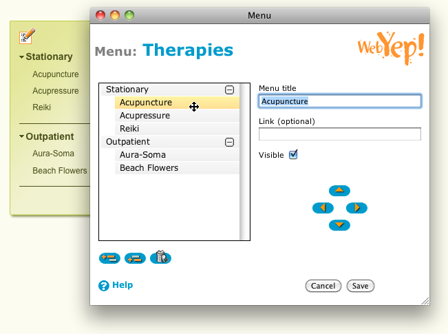
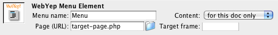

Menu

The Menu Element icon in the Dreamweaver object
palette
The Menu Element can be used to build simple menu structures. It is not intended to be used for main navigation, but for a subnavigation like for a "products" submenu.
A click on a Menu Element's item causes it to jump to a configurable "detail" or "target" page. This target page file is always the same, regardless which menu item was clicked, but the contents of its WebYep Elements will be different! For each menu item a "virtual copy" of the target page is created – each such virtual copy can have different content for all the WebYep Elements in it.
So by linking a WebYep Menu Element to a page that contains WebYep Elements (by simply setting the "Page" attribute of the Menu Element) you can build a simple navigation. The target page's WebYep Elements (like Long Text or Image Element etc.) will then show different content depending on which menu item was clicked.
This element is represented by the following PHP code:
<?php webyep_menu("Fieldname", false, "some_page.php", "contentFrame", "", ""); ?> more...
(see "Attributes of the Menu Element" below for details)
- "Fieldname": A string – the field name for this element.
- true/false: A boolean – the scope for this element.
true if the element should have the same content on all pages (global).
false if it should have different content on each page it appears on. - "some_page.php": A string – the URL of a page that the menu's items should link to.
- "contentFrame": A string (optional) – the name of the frame, that should be the target of the links.
Pass an empty string ("") if you're not using frames. - "": A string – obsolete, pass an empty string ("").
- "": A string – obsolete, pass an empty string ("").
The menu items can be edited by the user by simply clicking the "Edit" button beside the menu in the webpage (when in edit mode). This will open the Edit Menu Window, in which the user can add/remove menu items, change their order and create simple hierarchies (by placing section titles and indenting items).

The Menu Element in action - by clicking
the "Edit" button beside the menu, the Edit Menu Window opens

The Edit Menu Window
Dynamic or static menu
A WebYep Menu is represented as an unordered list using the <ul> and <li> HTML tags. Submenu trees are represented by nesting such lists. Submenus can be expanded/collapsed by clicking on the submenu's title, if the WebYep Menu is configured to use JavaScript (the default) in the WebYep configuration file config-inc.php:
$webyep_sMenuType = "listJS";
Use a value of "list" instead, if you do not want to use JavaScript and want a static menu instead.
Note that the listJS style uses JavaScript in backward compatible way so that when JavaScript is not available, a static menu (with all subtrees expanded) will be presented. This is also to ensure the menu's accessibility.
By setting the configuration option
$webyep_bAutoCloseMenus
to true in the config-inc.php, expanding a menu tree will automatically close all other trees.
By setting the configuration option
$webyep_bRememberOpenMenus
to false in the config-inc.php, expanded menu trees will not be saved – when a new page is opened, all trees but the one the page belongs to are closed.
Formatting the menu
WebYep assigns special CSS style classes to the Menu Element's items, depending on what kind of item it is (a normal menu item or a submenu title) and its state (e.g. the currently selected item or an expanded submenu's title). By defining styles for these CSS classes in your page's stylesheet, you have detailed control of the look of your WebYep Menu.
List of CSS classes:
| CSS Class Name | Assigned, if.... |
| WebYepMenuItem | the item is a normal menu item (not a submenu title). |
| WebYepMenuTitle | the item is a submenu title. |
| WebYepMenuCurrentPath | the item is a parent of the currently selected menu item. |
| WebYepMenuCurrentItem | the item is the currently selected menu item. |
| WebYepMenuTitleExpanded | the item is a submenu title and its tree is currently expanded. |
| WebYepMenuFirstItem | the item is the first item in its tree (used e.g. for separation lines) |
Every menu item is a list item (<li>) that has a link (<a>) inside. The CSS classes are assigned to both, the <li> and the <a> tag. Sometimes there are assigned more than one class. For example the title of an expanded submenu will have the two classes "WebYepMenuTitle" and "WebYepMenuTitleExpanded assigned.
Important: Please also look out for examples on how to use CSS to design a WebYep Menu on our website: http://www.obdev.at/webyep/
Attributes of the Menu Element

The Dreamweaver inspector showing the Menu Element's
attributes
Menu name
A distinctive name for that element. This name will be displayed in the page in edit mode to give the user a hint on what this elements content stands for and to distinguish the different WebYep Elements in a page.
Content
When set to "for this doc only" the elements content is unique for this page - even if another element on a different page has the same name. If set to "for all documents" the content will be the same on all pages for elements of this kind that use the same name.
Page (URL)
Name (or full URL) of the page that is to be opened when a visitor clicks a menu item. Usually this will be the same page the Menu Element is on (thus "reloading" the same page, just with different content).
Target frame - when using framesets
If you want the target page ("Page" attribute) to opened in a different browser window or frame, set this attribute to the frames name. See the description of the "Page (URL)" attribute above.
Notice: You can manually create links to a menu item's target page by adding the following to the URL of the link:
?DOC_INST=x
where "x" stands for the ID of the menu item - e.g.:
some_menu_item_page.php?DOC_INST=1
You can find out the ID of a menu item by simply clicking the menu item and observing the URL displayed in your browsers address field. At the end of the displayed URL you should see the "?DOC_INST=...".
The ID of a menu item has nothing to do with it's position in the menu (order)!